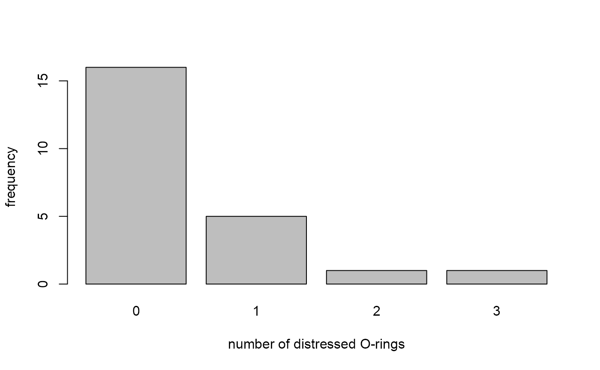
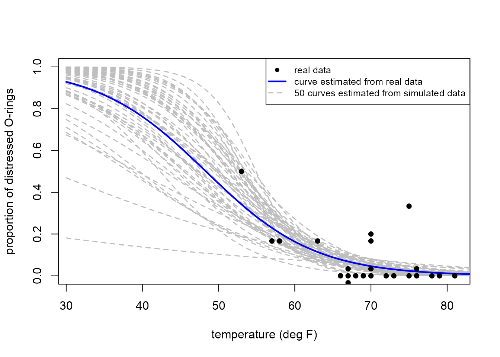
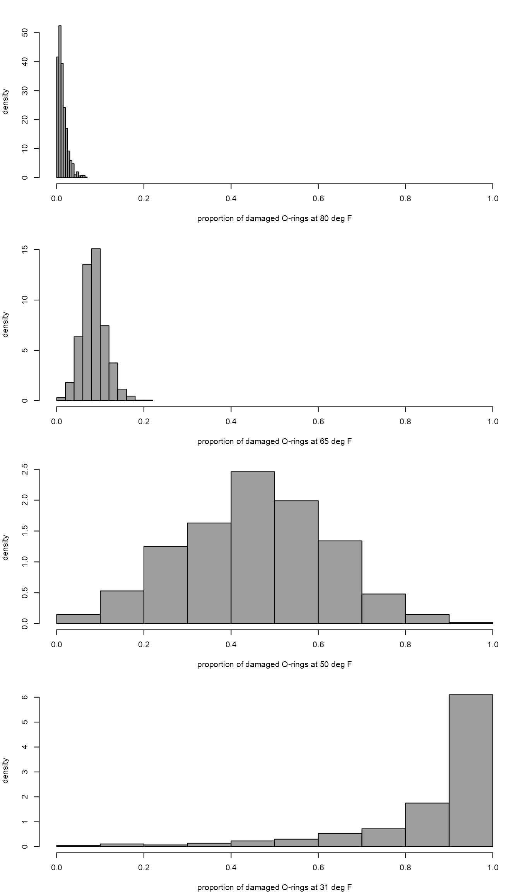

vignettes/stat0002-ch1a-shuttle-vignette.Rmd
stat0002-ch1a-shuttle-vignette.RmdThis vignette contains ideas and techniques that are not covered until later in STAT0002 and others (stochastic simulation and logistic regression) that are not part of the STAT0002 syllabus. Therefore, you should not worry too much about these details: just try to get a sense of how the R code works. The questions and comments below are there to prompt you to think about things.
For information about R see the STAT0004 Moodle page (if you are taking STAT1006) or the Introduction to R Moodle page (if you are not taking STAT1006, e.g. Natural Sciences students).
The R code used in this vignette are available: shuttle-vignette.R. The functions shuttle_sim and shuttle_sim_plot can be viewed by typing the name of the function at R command prompt >.
In the first lecture we discussed the Challenger Space Shuttle Disaster. In this vignette we are concerned mainly with the R code, so there is very little discussion of the problem, the data or statistical ideas.
In this vignette we consider how R can be used to analyse data related to this disaster. See Dalal, Fowlkes, and Hoadley (1989) for more information about these data and analyses to estimate the probability of a catastrophic failure of the Challenger space shuttle under the launch conditions on 28th January 1986. This paper is used as a worked example for the STAT0002 Meet your Professor ICA.
In the following R commands follow the command prompt > and # is used to create a comment, that is, to prevent R from trying to execute text that contains comments rather than a command.
First we load the stat0002 package.
> library(stat0002)
Loading required package: rpanel
Loading required package: tcltk
Package `rpanel', version 1.1-5: type help(rpanel) for summary informationThe data are available in a data frame called shuttle. A data frame is what R calls a table of data. Use ?shuttle to find out about these data.
> # Print the data to the screen
> shuttle
flight date damaged temperature pressure
1 1 21/04/1981 0 66 50
2 2 12/11/1981 1 70 50
3 3 22/03/1982 0 69 50
4 4 11/11/1982 0 68 50
5 5 04/04/1983 0 67 50
6 6 18/06/1983 0 72 50
7 7 30/08/1983 0 73 100
8 8 28/11/1983 0 70 100
9 9 03/02/1984 1 57 200
10 10 06/04/1984 1 63 200
11 11 30/08/1984 1 70 200
12 12 05/10/1984 0 78 200
13 13 08/11/1984 0 67 200
14 14 24/01/1985 3 53 200
15 15 12/04/1985 0 67 200
16 16 29/04/1985 0 75 200
17 17 17/06/1985 0 70 200
18 18 29/07/1985 0 81 200
19 19 27/08/1985 0 76 200
20 20 03/10/1985 0 79 200
21 21 30/10/1985 2 75 200
22 22 26/11/1986 0 76 200
23 23 21/01/1986 1 58 200
24 24 28/01/1986 NA 31 200NA means?> # The function head() prints only the first 6 lines of the data (useful to see the structure of large datasets)
> head(shuttle)
flight date damaged temperature pressure
1 1 21/04/1981 0 66 50
2 2 12/11/1981 1 70 50
3 3 22/03/1982 0 69 50
4 4 11/11/1982 0 68 50
5 5 04/04/1983 0 67 50
6 6 18/06/1983 0 72 50> # Tabulate the number of O-rings with thermal distress
> table(shuttle[, "damaged"])
0 1 2 3
16 5 1 1 > # Repeat and assign the output to the vector o_ring_table
> o_ring_table <- table(shuttle[, 3])Note the different way to get the column that we want.
We produce a bar plot of the numbers of distressed O-rings and a scatter plot of temperature against pressure. See also the vignette Chapter 2: Graphs (more than one variable).
> barplot(o_ring_table, xlab = "number of distressed O-rings", ylab = "frequency")
> attach(shuttle)
The following object is masked from package:datasets:
pressure
> plot(pressure, temperature)
attach(shuttle) enabled us to do? Type ?attach to find out what the attach() function does.Did you also note the warning message? This means that there exists another variable called pressure, in the R package called datasets. [Type library(help = "datasets") to see all the datasets available in the datasets package.] Using attach(shuttle) means that if we ask R for the variable pressure then R gives us shuttle[, "pressure"]. Otherwise pressure would give us the data in the datasets package. This highlights the fact that if we use attach() then we need to be careful.
> # The opposite of the function attach() is the function detach()
> detach(shuttle)> pairs(shuttle[, 3:5])3:5 bit is used for and what the pairs() function does?> # Remove the zeros from the O-ring damage data
> not_zero <- shuttle$damaged > 0
> not_zero
[1] FALSE TRUE FALSE FALSE FALSE FALSE FALSE FALSE TRUE TRUE TRUE FALSE
[13] FALSE TRUE FALSE FALSE FALSE FALSE FALSE FALSE TRUE FALSE TRUE NAnot_zero contains?> xlim <- range(shuttle$temperature)
> xlim
[1] 31 81
> # Plot with no zeros
> plot(shuttle$temperature[not_zero], shuttle$damaged[not_zero], xlim = xlim, ylim = c(0, 3), ann = FALSE)
> title(xlab = "temperature / deg F", ylab = "number of distressed O-rings")
> # Plot of all the data
> plot(shuttle$temperature, shuttle$damaged, ann = FALSE)
> title(xlab = "temperature / deg F", ylab = "number of distressed O-rings")Can you see/guess what the functions range and title and the function arguments xlim, ann, xlab and ylab do?
Did you see yet another way to refer to the variable temperature in the shuttle dataset?
This section involves a statistical model, a logistic regression model, that is not part of the STAT0002 syllabus, so don’t worry too much about the details that follow. However, this section involves things that we will study later in STAT0002, namely independence, the binomial distribution and (the general concept of) regression. We fit the model using a general fitting method called maximum likelihood estimation. This method is not formally part of the STAT0002 syllabus, but we will look at it very briefly later in the course.
Consider the six O-rings on the space shuttle. We suppose that on a launch at temperature \(t\) degrees F:
Under these assumptions the number of O-rings that suffer thermal distress has a binomial distribution with parameters \(6\) and \(p(t)\). We will study this distribution in Chapter 5 of the STAT0002 notes. We have reason to believe that \(p(t)\) depends on \(t\), that is, the probability that an O-ring suffers thermal distress is different for different launch temperatures. A simple model that is used in this kind of situation is a linear logistic regression model, in which \[ \ln \left(\frac{p(t)}{1-p(t)}\right) = \alpha + \beta t, \] for some unknown constants \(\alpha\) and \(\beta\). That is, the logit \(\log[p(t) / (1-p(t))]\) of \(p(t)\) is assumed to be a linear function of \(t\). Inverting this equation gives \[ p(t) = \frac{e^{\alpha + \beta t}}{1 + e^{\alpha + \beta t}}. \]
Why would it not make sense to suppose that \(p(t)\) is a linear function of \(t\)? [Bear in mind that \(p(t)\) is a probability and therefore can be no smaller than 0 and no larger than 1.]
How does \(p(t)\) behave as \(t\) becomes very small, and as \(t\) becomes very large, and how does this depend on the value of \(\beta\)?
What happens in the special case where \(\beta = 0\)?
A linear logistic regression model is a special case of a Generalized Linear Model. The function glm() can be used to fit this type of model, using maximum likelihood estimation to estimate the unknown parameters (or coefficients) \(\alpha\) and \(\beta\). First we create response data y (numbers of O-rings with and without thermal distress) and the explanatory data x (the launch temperatures).
> # Create a matrix y containing 2 columns:
> # column 1: number of O-rings WITH thermal distress
> # column 2: number of O-rings WITHOUT thermal distress
> y <- cbind(shuttle[1:23, 3], 6 - shuttle[1:23, 3])
> head(y)
[,1] [,2]
[1,] 0 6
[2,] 1 5
[3,] 0 6
[4,] 0 6
[5,] 0 6
[6,] 0 6
> x <- shuttle[1:23, 4]
> x
[1] 66 70 69 68 67 72 73 70 57 63 70 78 67 53 67 75 70 81 76 79 75 76 58Then we fit the model.
> shuttle_fit <- glm(y ~ x, family = binomial)
> # Produce a summary of the estimates. There is a lot of output: only look at the
> # numbers in the column headed "Estimate".
> summary(shuttle_fit)
Call:
glm(formula = y ~ x, family = binomial)
Deviance Residuals:
Min 1Q Median 3Q Max
-0.9876 -0.7798 -0.4987 -0.2975 2.7483
Coefficients:
Estimate Std. Error z value Pr(>|z|)
(Intercept) 6.75183 2.97989 2.266 0.02346 *
x -0.13971 0.04647 -3.007 0.00264 **
---
Signif. codes: 0 '***' 0.001 '**' 0.01 '*' 0.05 '.' 0.1 ' ' 1
(Dispersion parameter for binomial family taken to be 1)
Null deviance: 28.761 on 22 degrees of freedom
Residual deviance: 19.093 on 21 degrees of freedom
AIC: 36.757
Number of Fisher Scoring iterations: 5
> alpha_hat <- shuttle_fit$coefficients[1]
> beta_hat <- shuttle_fit$coefficients[2]We calculate the fitted, or estimated probability \(p(t)\) over a range of temperatures that includes 31 degrees F, and stored these numbers in a vector called fitted_probs.
> temp <- seq(from = 30, to = 85, by = 0.1)
> linear_predictor <- alpha_hat + beta_hat * temp
> fitted_curve <- exp(linear_predictor) / (1 + exp(linear_predictor))seq does? Use ?seq to find out.We plot the proportions of distressed O-rings against temperature with the fitted logistic probability curve \(p(t)\) superimposed. The second plot is the same as the plot in the lecture slides.
> plot(shuttle$temperature, shuttle$damaged / 6, ann = FALSE, ylim = c(0, 1))
> title(xlab = "temperature / deg F", ylab = "proportion of distressed O-rings")
> lines(temp, fitted_curve)Now we produce a better plot, one that is similar to the plot that appears in the lecture slides.
> repeated_data <- which(duplicated(shuttle[, 3:4]))
> shuttle[repeated_data, ]
flight date damaged temperature pressure
11 11 30/08/1984 1 70 200
13 13 08/11/1984 0 67 200
15 15 12/04/1985 0 67 200
17 17 17/06/1985 0 70 200
22 22 26/11/1986 0 76 200
> new_damaged <- shuttle$damaged
> new_damaged[c(11, 13, 17, 22)] <- new_damaged[c(11, 13, 17, 22)] + 0.2
> new_damaged[15] <- new_damaged[15] - 0.2
> plot(shuttle$temperature, new_damaged / 6, ann = FALSE, ylim = c(0, 1), pch = 16)
> title(xlab = "temperature (deg F)", ylab = "proportion of distressed O-rings")
> lines(temp, fitted_curve)
> legend("topright", legend = c("sample proportions", "fitted curve"), pch=c(16, -1), lty = c(-1, 1))
> abline(v = 31, lty = 2)?par.The smooth curve superimposed on the plot immediately above cannot be thought of as “the truth”: it is merely an estimate \(\hat{p}(t)\), based on a single dataset and some simple modelling assumptions, of how the probability \(p(t)\) of O-ring distress might depend on launch temperature \(t\). If the launches were repeated, under exactly the same conditions that produced the original data, then we would (with high probability) obtain a different dataset and hence a different fitted smooth curve. That is, different experiments produce different datasets, which leads to different estimated curves and therefore uncertainty about \(p(t)\).
In reality we are not able to repeat the launches and so we have only one dataset, producing one estimated curve. However, we should appreciate that this dataset (and its estimated curve) is one example taken from a population of datasets (and their respective estimated curves) could be obtained. The size of our uncertainty based on this one dataset is related to how variable is this population of estimated curves. If the estimated curves are very similar then it may not matter which of them we get from our real dataset, because our findings will be similar for all datasets. However, if the estimated curves are very different then our findings will vary a lot depending on which dataset we have obtained.
Although we cannot repeat the launches we can get an idea of how much uncertainty there is about \(p(t)\) for given values of \(t\) by simulating fake datasets from the model fitted to the real data. This involves getting a computer to `decide’ whether or not a given O-ring suffers thermal distress during a launch at temperature \(t\), in a random manner such that the probability of distress equals \(\hat{p}(t)\). For more details about how we can use a computer to generate pseudo-random numbers (numbers that are close enough to being random for our purposes) see the vignette Stochastic simulation.
The function shuttle_sim simulates fake O-ring thermal distress data for Challenger Space Shuttle launches at different launch temperatures. The following code simulates 10 fake datasets of size 23, using the real launch temperatures.
> # Simulate 10 fake datasets of size 23, using the real temperatures.
> res <- shuttle_sim(n_sim = 10)
> res
temps real sim1 sim2 sim3 sim4 sim5 sim6 sim7 sim8 sim9 sim10
1 66 0 0 0 2 0 0 1 0 2 0 0
2 70 1 0 0 0 0 0 1 0 0 1 0
3 69 0 0 0 0 0 0 0 0 1 0 0
4 68 0 0 0 1 0 0 1 0 0 1 2
5 67 0 2 0 0 0 0 0 0 0 0 0
6 72 0 1 1 0 0 0 0 0 0 0 1
7 73 0 0 0 0 0 0 0 0 1 0 0
8 70 0 1 0 1 0 0 2 0 0 0 2
9 57 1 1 0 1 3 0 3 2 1 4 0
10 63 1 1 1 1 0 0 0 0 2 0 0
11 70 1 0 1 1 0 2 1 0 0 0 0
12 78 0 0 0 1 0 0 0 0 0 0 0
13 67 0 1 0 0 1 0 0 0 1 0 0
14 53 3 1 3 3 0 2 3 2 2 1 1
15 67 0 0 0 1 0 1 0 1 1 0 1
16 75 0 0 0 1 0 0 0 0 0 0 0
17 70 0 2 0 0 1 0 1 1 0 1 0
18 81 0 0 1 0 1 0 0 0 0 0 0
19 76 0 0 0 0 0 0 1 0 0 0 0
20 79 0 0 0 0 0 0 0 0 1 1 0
21 75 2 0 0 0 0 0 0 0 0 0 0
22 76 0 0 1 0 1 0 0 0 1 0 0
23 58 1 2 2 0 1 2 2 2 2 0 2This function can also be used to simulate the number of distressed O-rings under the scenario that we launch the space shuttle many times at a single temperature. Here we do this 1000 times at 31 degrees F.
> # Simulate the number of distressed O-rings for 1000 launches at 31 deg F.
> res <- shuttle_sim(n_sim = 1000, temperature = 31)
> res[1:100]
[1] 5 6 5 6 5 6 6 6 6 6 5 6 6 5 4 4 6 6 6 6 5 6 6 6 5 6 6 6 6 5 5 6 5 6 5 5 6
[38] 5 5 6 5 5 5 6 5 6 4 6 6 6 6 4 5 5 6 4 6 6 5 6 6 6 5 6 5 6 6 6 6 6 5 6 6 5
[75] 5 6 6 5 5 6 6 6 5 6 5 6 5 6 5 6 5 6 6 6 6 6 5 6 6 6
> table(res)
res
2 3 4 5 6
15 204 1703 7336 13742 The function shuttle_sim_plot plots multiple linear logistic curves. Each curve is the result of simulating a fake dataset from the linear logistic model fitted to the real data and then estimating the linear logistic curve using the fake dataset. The following plot also contains the real data and a (blue) curve showing the curve fitted to the real data.
> shuttle_sim_plot(n_sim = 50, col = "grey")
Given that we are simulating data using a computer we could consider a scenario where 10 launches are carried out at each temperature in the real dataset, i.e. the simulated datasets now have size 23 x 10 = 230, rather than 23. This plot shows how the estimated curves would vary between different simulated datasets.
> shuttle_sim_plot(n_sim = 50, n_reps = 10, plot_real_data = FALSE, lty = 1)Now we consider the case where the simulated datasets each have size 2300.
> shuttle_sim_plot(n_sim = 50, n_reps = 100, plot_real_data = FALSE, lty = 1)See also the function shuttle_movie for an animated version of shuttle_sim_plot.
Finally, we produce a plot that is (almost) the same as Figure 1.6 in the notes.
> x <- shuttle_sim_plot(n_sim = 1000, plot = FALSE)
Warning: glm.fit: algorithm did not converge
Warning: glm.fit: fitted probabilities numerically 0 or 1 occurred
> shuttle_sim_hists(x, temps = c(31, 50, 65, 80), col = 8)